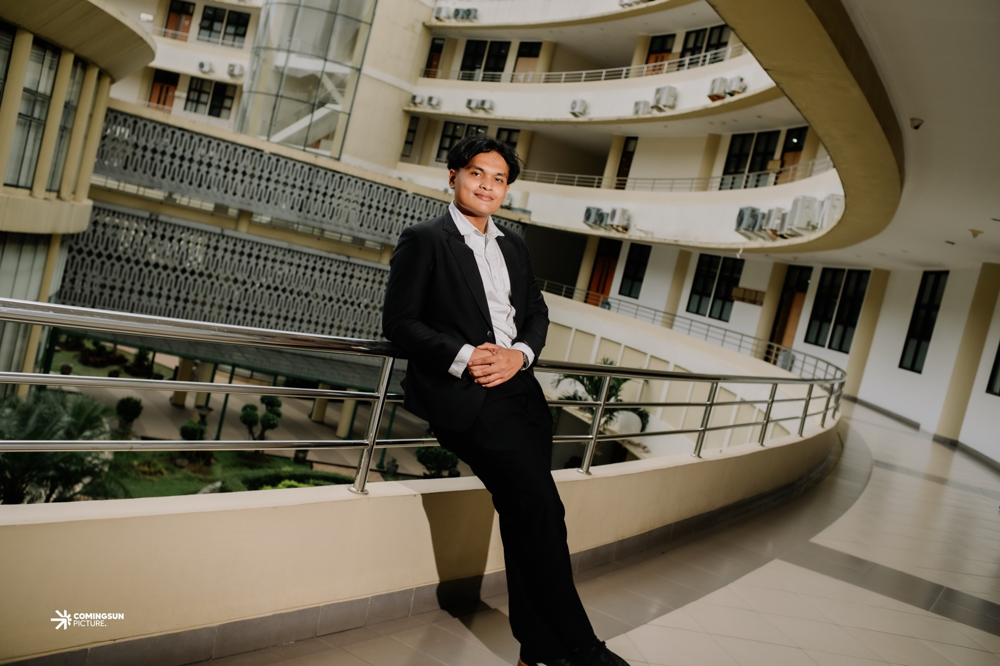
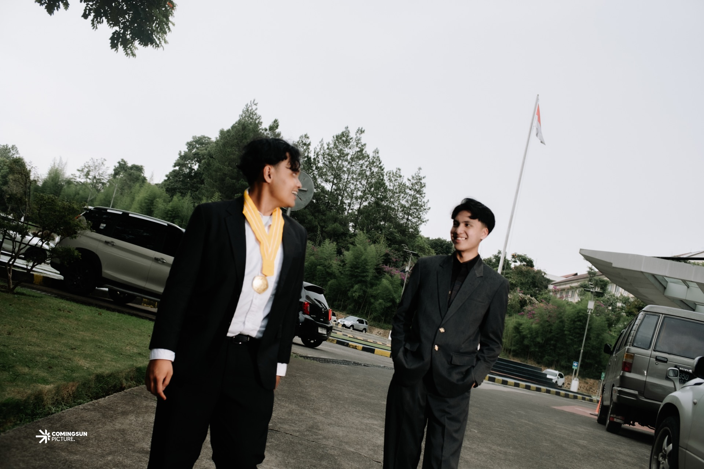
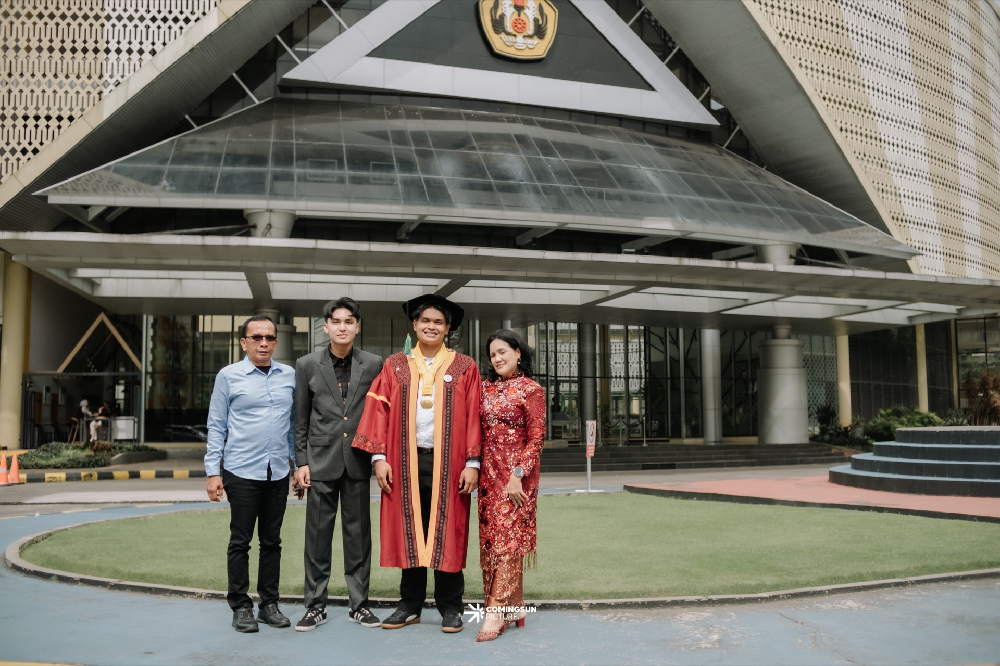

Marine Scientist · Researcher · Leader
Jogi Ruben
Natanael
Panggabean
Studying the ocean to protect the coasts.
Turning data into solutions for Indonesia’s climate future.
About
Fresh eyes on
old problems.

Marine Science graduate from Universitas Padjajaran, Bandung — working at the intersection of physical oceanography, climate variability, and what that means for communities along Indonesia’s coastlines.
Field work in Sukabumi and Lampung. Exchange at ITB. NUS Singapore fellowship. Eleven peer reviewed papers — two Scopus Q2 — mostly before finishing my undergraduate degree.
Education
Built to learn
everywhere.
Universitas Padjajaran
Bachelor’s in Marine Science · GPA 3.61
Most Outstanding Student FPIK Unpad 2025 · Valedictorian of the 2022 Marine Science cohort
Institut Teknologi Bandung
Student Exchange · Oceanography · GPA 3.74
17 credits on Climate Change in Coastal Environments · 4 field studies in Sukabumi and Lampung
National University of Singapore
Young Fellowship — Gen AI & Environment
10 AI lectures · 5 environmental research lab visits
Experience & Leadership
Science meets
real world impact.
Head of Laboratory & COO
Torgas Blue Energy
Created and led Torgas Laboratory, building integrated systems for industry driven training and applied energy research from the ground up.
MBKM Research Intern
BRIN — Climate & Atmosphere Division
Managed rainfall and upwelling datasets. Developed environment based solutions for flood early warning in West Java.
Research Assistant
Torgas TORALAB — under Dr. Buntora Pasaribu, PhD
Gas conversion experiments recognized as one of Indonesia’s 115 best innovations.
Chairperson — BEM FPIK Unpad
Jan 2025 – Present
Head of Internal Division — HIMAIKA UNPAD
Jan 2024 – Dec 2024 · 40 staff across 6 departments
Project Supervisor — PRABU UNPAD 2024
Mar 2024 – Aug 2024 · 8,000 students, 900 staff
Research
Eleven papers.
One throughline.
Two Scopus Q2 (Taylor & Francis & MDPI) · Mostly first author · 2025–2026
Awards & Skills
Tested in the arena,
not just the classroom.
Piagam Penghargaan Gubernur Jawa Barat — WJRS 2025
Signed by Gov. Dedi Mulyadi · Nov 2025 · No. 002.6/Kep.774IJOP Paper Competition — Science Technopark IPB Bogor
July 2025LKTIN SPEAR MSC — Universitas Jember · Score 247.3
October 2025Siaga Award — SPMKB Universitas Islam Indonesia
2025International Students Competition — Universitas Mataram
September 2025 · Smart Marine TechnologySampan Marine Competition — ITS Surabaya
September 2025Field & Lab
Field Research · Biodiversity Monitoring · Lab Protocols · Experimental Design · Open Water Diver (SSI)
Analysis & Tools
Statistical Analysis · QGIS · ArcGIS · MATLAB · Python · Scientific Reporting
Leadership
Team Management (40+ staff) · Strategic Planning · Environmental Policy Assessment
Languages
Indonesian (Native) · English IELTS 7.5 · German (Beginner)
Contact
Let’s work on
something meaningful.
Open to research collaborations, internship opportunities, and conversations about ocean science and climate policy. Don’t hesitate.

